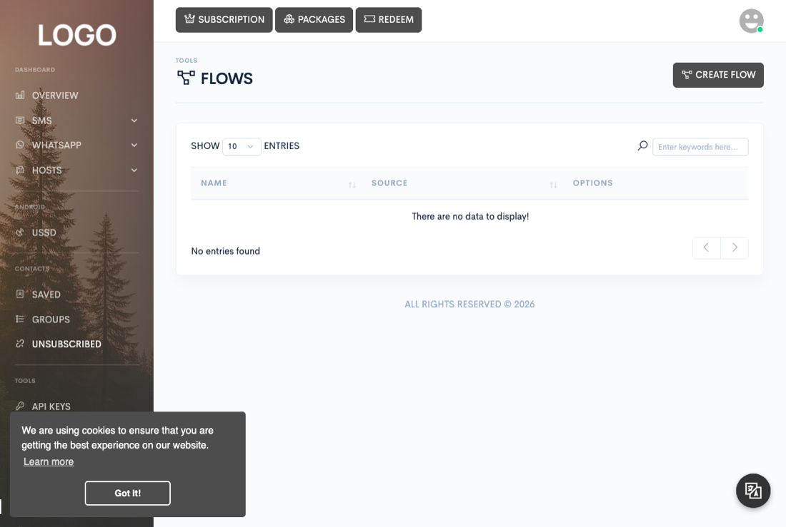

Automation & API
Flow builder
Build multi-step, no-code automations that react to an incoming SMS or WhatsApp message — branch on its content, reply, hand it to AI, save the sender as a contact, or pause and resume the conversation.

Flows are visual automations built on a drag-and-drop canvas, reached from Tools → Flows in the sidebar (visible when your subscription includes flows), which lists your saved flows and their source (SMS or WhatsApp). Its Create flow button opens a blank canvas in a new tab; each row's edit button reopens a saved one.
What flows do
A flow is evaluated every time an inbound message arrives that matches one of its source nodes — separately for WhatsApp and for SMS. Both load every flow you've saved for that source, find the source node(s) matching the specific device or WhatsApp account the message came in on, and walk the connected nodes from there.
Processing has two built-in safety limits: a flow can walk at most 50 nodes per execution before it stops itself (cycle/runaway protection), and any node already visited on the current path is skipped rather than reprocessed if a loop is drawn. Neither limit is configurable.
Trigger types
Every flow starts from exactly one kind of source node, and a flow only ever fires for the specific device or account that node is bound to:
- SMS source — bound to one of your Android gateway devices. The flow only runs for messages received on that device.
- WhatsApp source — bound to one of your linked WhatsApp accounts. The flow only runs for messages received on that account.
The builder refuses to save a flow with no source node, a source node with nothing wired to it, or an SMS source with no device selected / WhatsApp source with no account selected.
Node types
These are the blocks in the left-hand palette. Four are marked WhatsApp only — wiring them under an SMS source produces no step at all, since sending media that way only works for WhatsApp.
| Node | Behavior |
|---|---|
condition | Branches on the incoming message text:
starts_with, ends_with, contains,
equal (case-insensitive), not_contain, or
regex (delimiters added automatically if you didn't supply any, then
tested for validity before use). If the condition evaluates false, that path —
and everything downstream of it — is marked invalid and skipped for the rest of
this run. |
send_text | Queues a text reply on the matching device or
WhatsApp account. Supports the shortcodes {{phone}},
{{message}}, {{date.now}}, {{date.time}},
plus your plan's footermark, and a Priority switch (send immediately vs. queue
normally — same semantics as Quick send). |
send_image / send_video / send_audio /
send_document | WhatsApp only. Sends a file by URL (or one uploaded through the node's own Upload button — see Import and export below), with an optional caption on everything except audio. |
ai_reply | Sends the incoming message to one of your AI
keys (see the AI features page) and replies with whatever comes back. Saving a
flow with an ai_reply node that has no AI key selected is rejected
before it's ever saved. |
save_contact | Adds the sender to a contact group if they're not already a contact, or merges the group onto their existing contact if they are (never removes them from a group they're already in). |
pause | Suspends further automation for that sender for a
duration you set, scoped to a context — flow, autoreply,
or all (both). While paused, the engine skips every node type except
resume, condition, and the source nodes themselves, so a
paused conversation can still be re-armed by a matching message. |
resume | Clears a pause for the same context. A flow whose
only path to a resume node is reachable by the incoming message is
allowed to run even while the sender is paused, so the paused conversation has a
way back in. |
condition and pause/resume
bookkeeping) writes a log entry — see Testing a flow below.
Testing a flow
There's no simulate/preview button — a flow is only exercised by an actual inbound message hitting its source device or account. After saving a flow, send it a real SMS or WhatsApp message that should match, then check Tools → Logger. Each step the flow ran logs an entry there (reason text like "Send Message Flow Executed", "AI Flow Response Generated/Failed", or "Contact Save Flow Executed") with the recipient and message content, so you can confirm which nodes fired without guessing from the Sent/Received tables alone.
If nothing logs at all, the most common causes are: the source node's device/account
doesn't match where the test message actually arrived, the sender is currently paused
under a context your flow doesn't resume, or the flow never got past a
condition node — none of which produce an error, they just produce no
steps.
Import and export
The canvas itself has no whole-flow download/upload — Save serializes the canvas and saves it to your account; loading an existing flow does the reverse in the browser. Editing an existing flow updates that same saved flow in place — it doesn't keep prior versions.
Each media node's own Upload button is a per-node file upload used
by the Send Image/Video/Audio/Document nodes: it rejects anything over a
10 MB cap, stores the file, and hands that node the resulting
URL. Uploads are restricted to a fixed list of image, video, audio and document
extensions; anything else is rejected with an invalid-file-type error. Scriptable
formats such as SVG, HTML and XML are deliberately excluded, because
uploads/ is served directly by your web server.